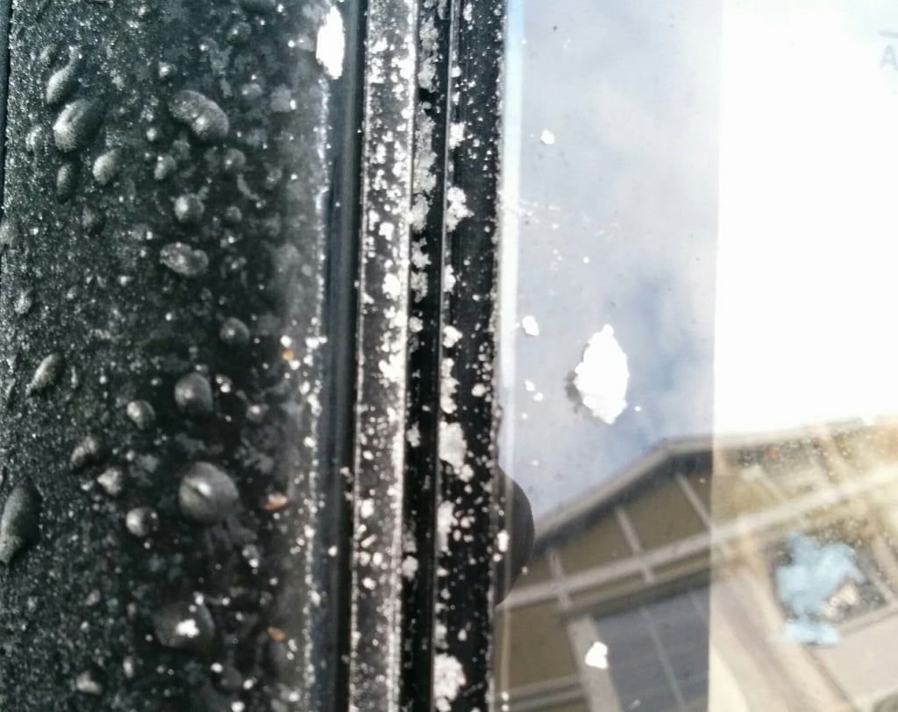
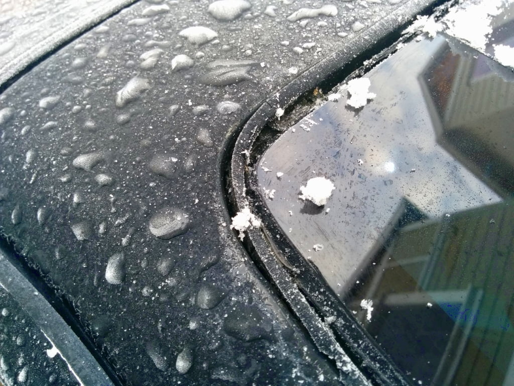

-
Is it possible to remove the trim on the edges of the windshield and later install it again without removing the windshield itself?
I'm in the process of getting the car painted but there's a problem doing the part at the edges of the windshield. It would be great to just remove and replace the windshield and paint the body while it's off. However, there seems to be no one capable of getting a replacement windshield for a Z31 in Estonia. I wouldn't want to risk having it taken off if no replacement is available. -
Yes it is. If i remember correctly remove the bottom peices and then you can slide one side down and off. Be careful not to bend too far or they won't fit upon reassembly. -
The metal trim is removable like Kado said above. the large cowl pieces are held in with SS screws at the bottom.
The upper parts are held in with hidden white plastic clips that snap into a channel trim piece that surrounds the windshield.
That plastic channel piece is not removable without removing the windshield first. It's that part that shrinks and pulls
up at the upper corners of the windshield.
84 AE/Shiro #683/Shiro #820/84 Turbo -
Could I still remove and replace the upper part that's covering it on the outside and the corner pieces while leaving the channel piece there? Could I install new corner pieces onto the shrunk channel piece? What I would like to achieve is to take the trim off so that there's more clearance for painting and to replace the corner pieces if I manage to order a new set. -
Yeah, you can remove the metal trim and leave the channel (spacer molding) piece.
The shrinking in the corners just creates a gap for stuff to get into and doesn't
really affect how the metal trim pieces snap in place.
Here is a good diagram:
http://www.nissanpartsdeal.com/parts…5%3b6%3dT%2fR)
These are the clips that hold the metal trim into the spacer molding:
http://www.amazon.com/Windshield-Mou…/dp/B00418230C
84 AE/Shiro #683/Shiro #820/84 Turbo -
When i had my windshield replaced, i had them leave the trim out so i could have it re-powdercoated.
Here is what the spacer molding looks like when the metal trim is removed. It was a bit cold this morning..


84 AE/Shiro #683/Shiro #820/84 Turbo -
Thanks for all the info. Now I see that my plan doesn't work though, the spacer molding will still be in the way of painting the body properly. Would there be any way to do a decent paint job around the windshield without removing it? -
unless you can prise it away from the body somehow and keep it there,with old style push in screens people have used insulated electrical cable pushed in to lift the rubber off the body so paint goes underneath then pull it out when dry,maybe you could try it the other way to prise it back away from the body? an idea anyway -
I managed to find a new replacement windshield and the moulding piece. The car was in a shop and I wanted to have the windshield and the plastic moulding removed and replaced to get the paint job done properly. (The moulding is brittle and warped in the corners as usual.) The problem is that they couldn't get the trim pieces off without breaking anything. The guy said that he would have to either break the trim pieces or smash the old glass. He also took it to another shop for a second opinion and still no solution. I told him everything I had read about it here and he had tried it all.
Are there any other particular tricks to try to take the trim off while still hoping to save the old windshield just in case? I suppose they tried everything obvious so it would have to be something very specific. It would be a bit of a shame to break the glass without even trying. It was pretty hard to get hold of a new one.

Copyright © 2006–. All rights reserved. Privacy Policy